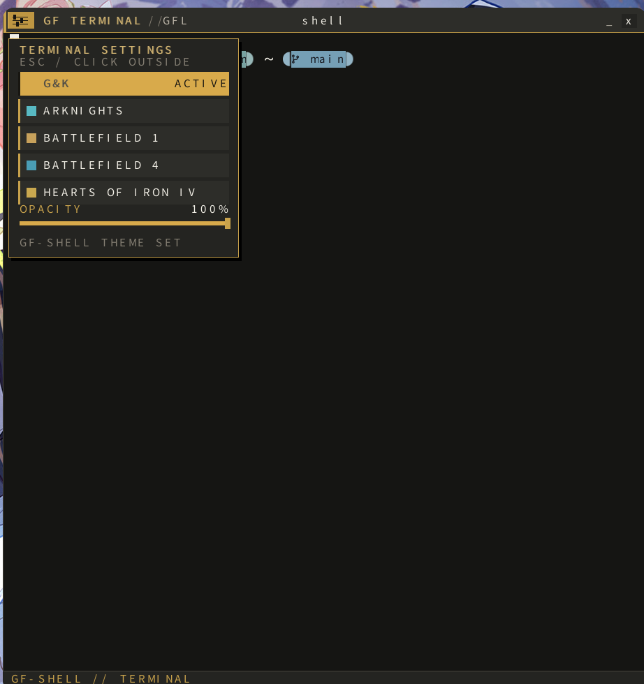

A RUST TERMINAL FOR GF-SHELL // KITTY GRAPHICS NATIVE
CHARCOAL // BRASS // 0.2.0
Ctrl+Shift+RRun gf-img photo.webp inside the terminal. PNG, JPEG, GIF and WebP are converted and streamed as Kitty graphics.
CFG popup switches G&K, Arknights, Battlefield 1, Battlefield 4 and Hearts of Iron IV; the slider sets window opacity. Both persist in ~/.config/gf-term/config.json.
Arrow keys, function keys, Ctrl combinations, UTF-8 text, wheel scrollback, draggable custom title bar.
git clone https://github.com/Wglly/GF-shell.git
cd GF-shell/gf-term
cargo build --release
./install.shInstalls gf-term, gf-img and a desktop entry into ~/.local. Requires Rust, Wayland/X11 dev libraries, fontconfig and freetype2.